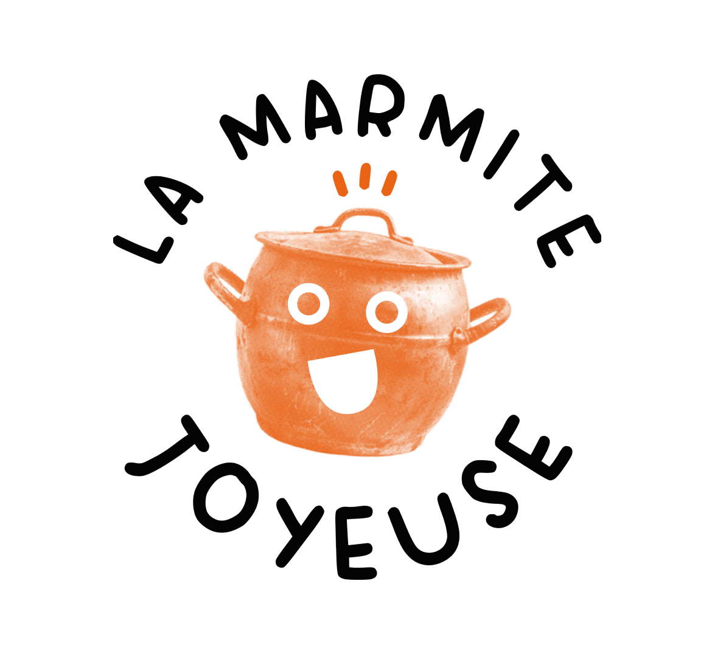
 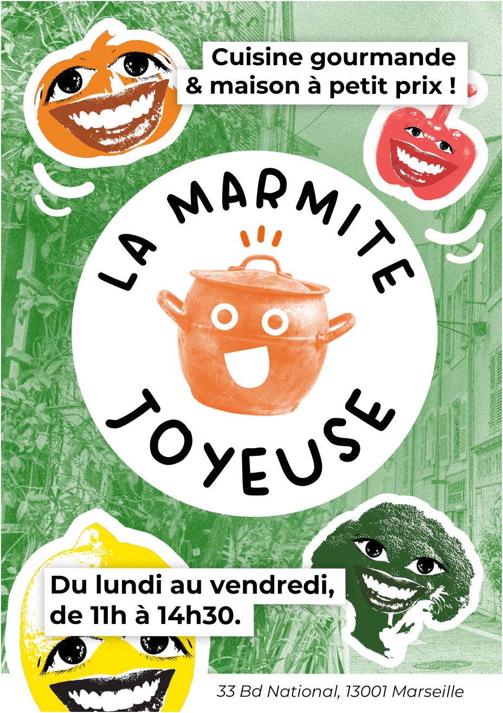
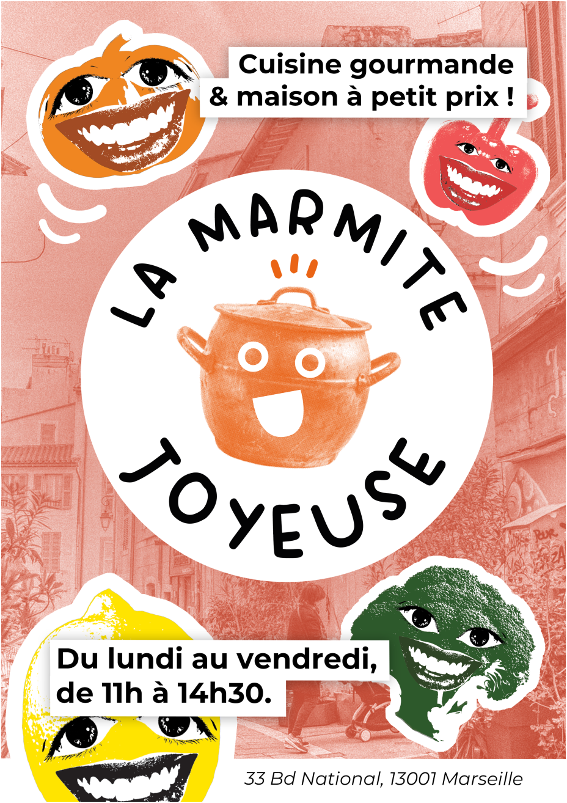
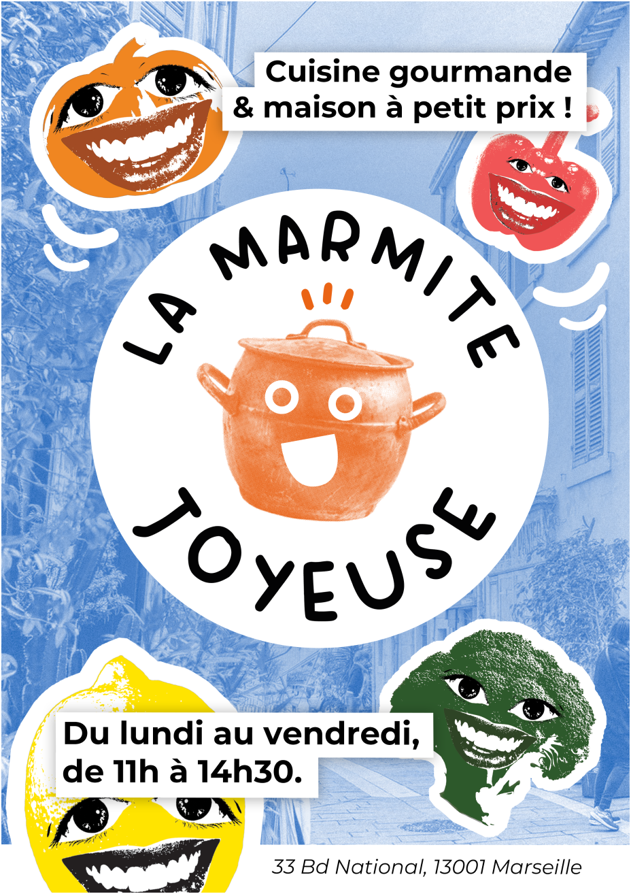
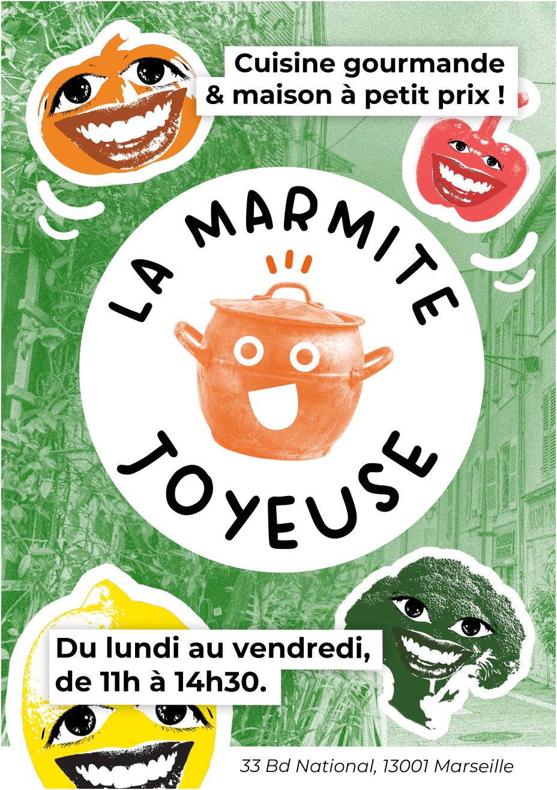
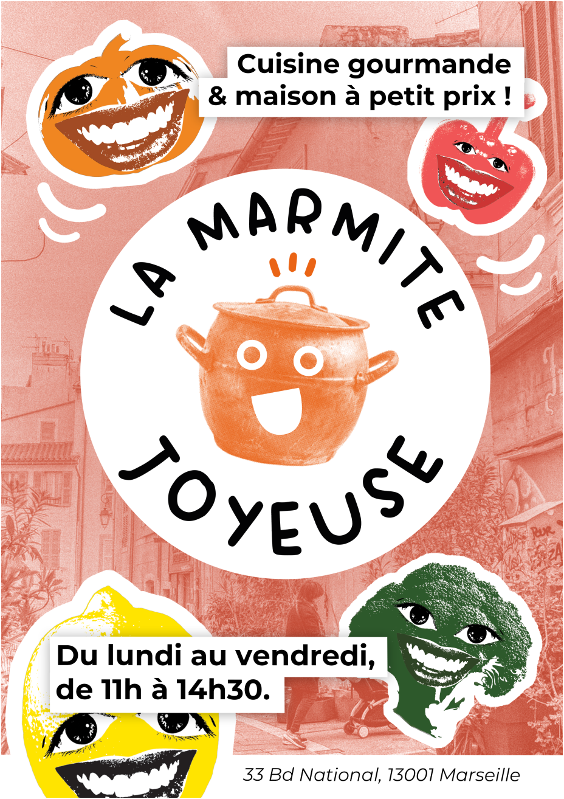
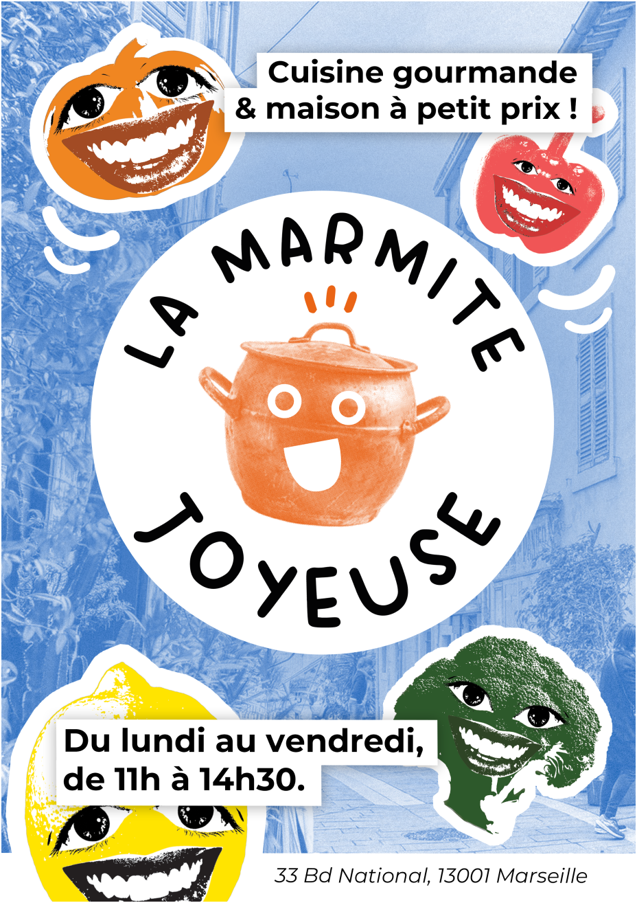
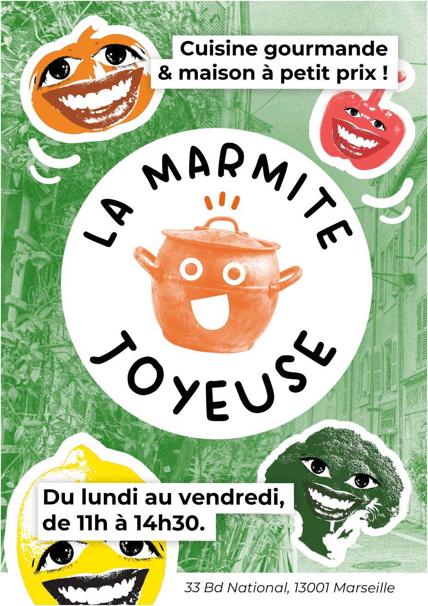
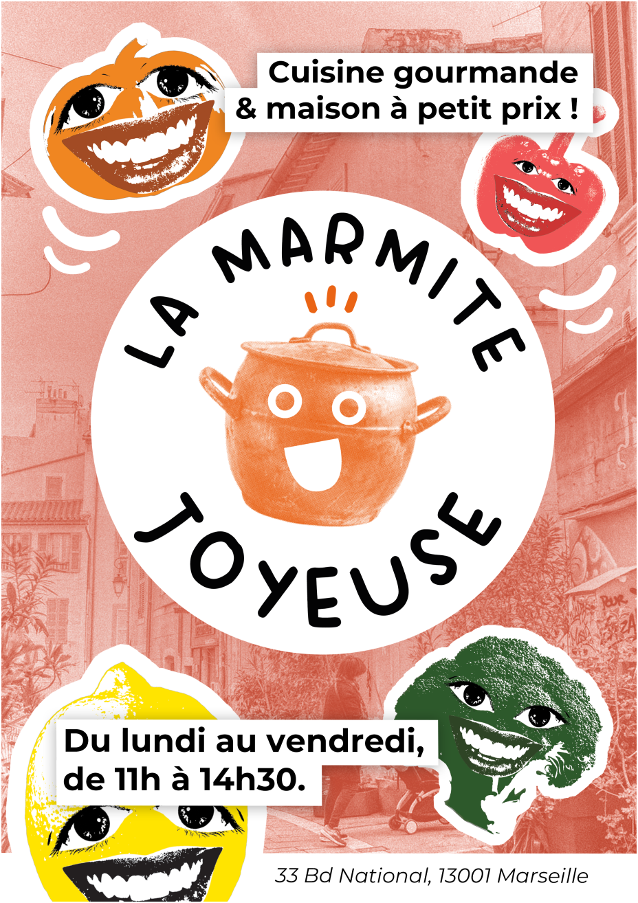
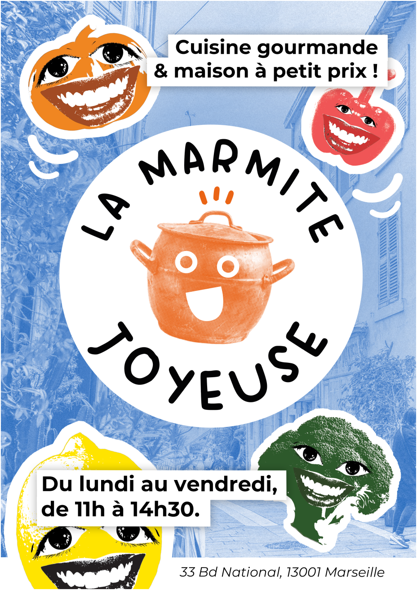
Pour la mise en situation et le déploiement, j’ai décliné l’identité sur une série d’affiches modulables, pensées pour l’affichage de rue et la vitrine, avec des variantes colorées qui gardent une lecture immédiate (promesse, horaires, adresse). La carte de visite devient un objet utile et durable, complétée par une carte de fidélité simple (tampons) pour encourager le retour. Enfin, j’ai créé un dispositif participatif “Dessine-moi ta Marmite Joyeuse !” : des cartes à compléter qui invitent les clients à s’approprier le symbole, générant des déclinaisons spontanées et renforçant le lien social.
Les différents supports
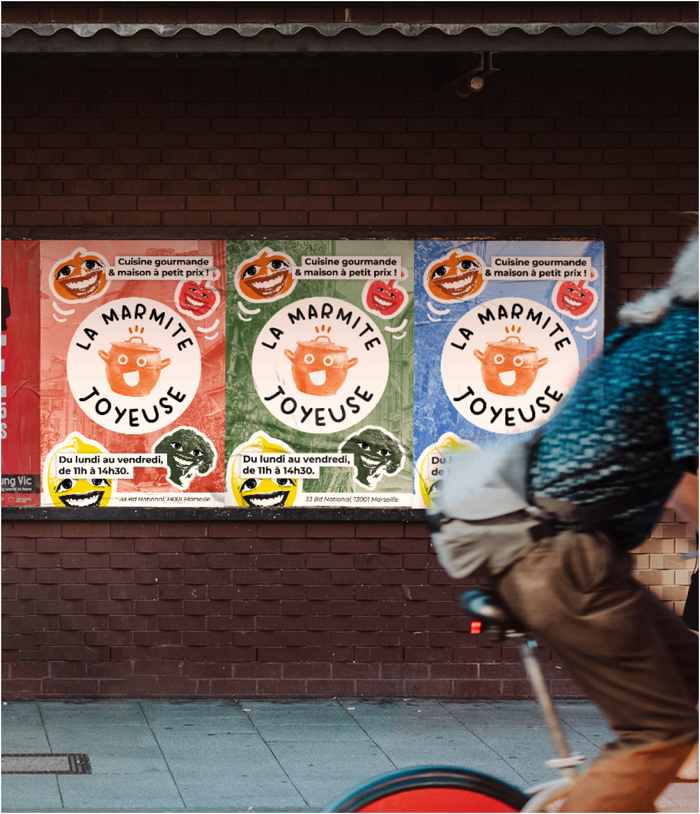
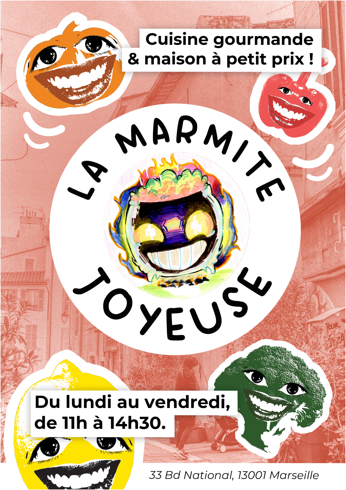
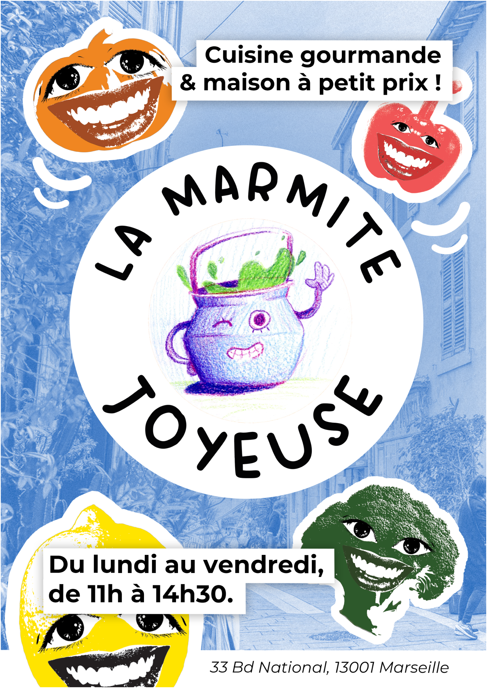
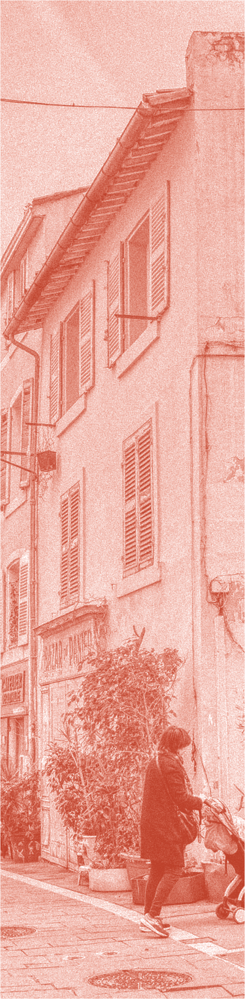


Gamme colorée
#EB651C
#367243
#CC3D37
#4F9AD4